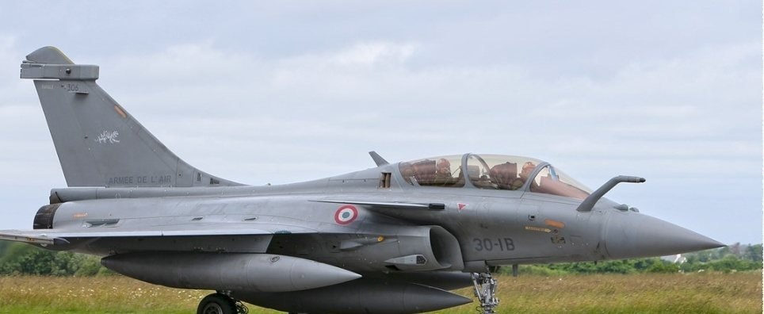

Élève sous-officier, spécialité avionique
Armée de l'Air et de l'Espace
- Formation : formation militaire de sous-officier et formation technique de spécialité avionique.

Technicien avionique Rafale
Dépannage, essais et remise en service
Landes, Nouvelle-Aquitaine
06 89 59 21 23
linkedin.com/in/maxence-baconnet-1a10a3246
maxbaco33.github.io
Technicien avionique dans l'Armée de l'Air et de l'Espace depuis 2018, je diagnostique et résous des pannes sur Rafale, de l'analyse du dysfonctionnement jusqu'à la remise en service de l'avion, pour garantir le maintien de l'activité opérationnelle.
Titulaire d'un BTS Systèmes Numériques (option Électronique et communications), j'associe une solide base en électronique à plus de 8 ans de terrain dans un environnement aéronautique exigeant, où la sécurité, la qualité et la traçabilité ne se négocient pas.
Objectif professionnel
Rejoindre un industriel de l'aéronautique, de l'électronique ou de la défense en Nouvelle-Aquitaine, sur un poste d'essais et validation, de support technique, d'expertise électronique, de coordination technique ou de supervision de maintenance.
Armée de l'Air et de l'Espace
Armée de l'Air et de l'Espace
Sogetrel
Licence de maintenance aéronautique Be2
Rafale C, B et M
DSAÉ, Direction de la sécurité aéronautique d'État
Habilitation APRS
Approbation pour remise en service
DMAé, Direction de la maintenance aéronautique
Option Électronique et communications
Lycée Pape Clément
Lycée professionnel Condorcet
Projet personnel en préparation, mené sur mon temps libre à partir de matériel et de documents publics.
Plusieurs modules électroniques reliés par un bus CAN, à l'image des équipements d'un avion : capteurs redondants avec logique de vote, autotest intégré et détection des dégradations pour désigner le module à remplacer.
Pour échanger sur une opportunité, le plus simple est de me contacter sur LinkedIn. Basé dans les Landes, mobile dans toute la Nouvelle-Aquitaine.
Téléphone : 06 89 59 21 23